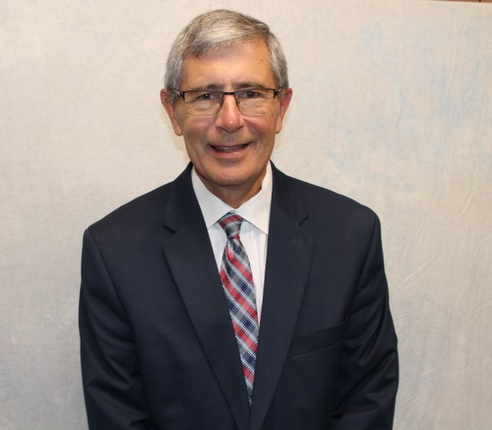

Our Pastor
Billy Griffith
A Word From Our Pastor...
The first two institutions ordained by God were the family and the local church. In fact, the Bible makes this point when it calls the Church, the Bride of Christ and Christ, the Bridegroom. The Apostle Paul says man is the head of the house just as Christ is the head of the Church.
Philadelphia Southern Methodist Church believes a church is only as strong as she (Bride) relies upon the Lord (Bridegroom). We believe doing God’s will according to His Word and guided by His Spirit is the only way for our church to truly be a Christian blessing. This website shows a church with strong Christian families. These people are involved in World Evangelization, globally and locally. We are intent on being “the light of Christ” to those who are hurting and lonely in our community
If you are not involved in a local church, we invite you to be a part of a church that cares for you and desires to make you feel at home as we together worship our Lord and Savior Jesus Christ. We desire to be a blessing to any person who enters our doors. Come and be a part of us as we seek to serve our Lord. God always blesses those who honor Him—and you can be a part of that blessing!